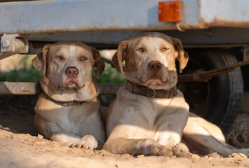

This place runs because people like you show up.
There is no paid staff. No one on salary to open the gates at 6am, fill the water troughs before Yuma hits 115°, or make sure every animal gets eyes on them before the day starts. That work happens because volunteers choose to show up — every morning, regardless of weather, regardless of how they feel. Every animal that’s safe here is safe because of that choice. We’re looking for the next person willing to make it.
There’s a role for whatever you can give
You don’t need farm experience or a background in rescue. You need to mean it when you say you’ll be there. These animals have already been let down once. Reliability isn’t a nice-to-have here — it’s the whole thing.
Daily animal care
Feed, water, clean. Every morning. In July heat, on holidays, on the days when nobody feels like it. It’s physical, unglamorous, and completely non-negotiable — because these animals don’t have an off day. If you can commit to a regular morning shift, you’ll quickly become one of the most essential people here.
Events & transport
Vet runs, adoption events, fundraiser logistics. Sometimes an animal simply needs to be somewhere else — a specialist appointment, a foster home, a rescue transfer. A truck or a reliable car and a few free hours is all it takes. These are our most flexible roles and they fit around almost any schedule.
Property & maintenance
Fences break. Gates rust. Nothing here maintains itself and nobody on staff is coming to fix it — because there is no staff. If you can swing a hammer, run a drill, or are just willing to learn while you work, there are projects waiting. Every repair you make is an animal that stays where it belongs.
Socialization & trust-building
Some animals arrive here having never been handled gently. Some have been hit. Some flinch at raised hands. Rebuilding that isn’t a program — it’s just a calm person showing up consistently, moving slowly, earning it. If you have patience and a quiet way with animals, this is work that matters in a way that money genuinely cannot replace.
Good people who follow through.
We’re not a casual drop-in, and we won’t pretend otherwise. These animals have been abandoned before. Consistent care — the same faces, the same routine, the same follow-through — is how they learn to trust again. If you’re the kind of person who does what they say, you’ll fit right in.
- You’re 18 or older (or 16–17 with a parent or guardian present).
- You genuinely care about animals — and you have the patience to show it.
- You can commit to a regular schedule. Even a few hours a month helps — but reliability matters more than frequency.
- You’re comfortable following safety protocols and working as part of a team.
- You’re not afraid of heat, dirt, or doing the unglamorous work that still needs doing.

Nobody regrets showing up.
"I volunteer on weekends. These aren't just animals to us — they each have a story, a name, a personality. If you've ever considered giving, do it. You'll feel it."
"I started with one morning a month because that's all I had. Nobody made me feel like it wasn't enough. Two years later I run the Tuesday feed shift — and the horses know my truck."
"I'd never touched a farm animal before I showed up. The team taught me everything that first morning—how to move around them, how to read their moods, what they need. Now there are animals here who come to the fence when they hear my truck. That's home."
From “maybe” to your first shift in three steps
No interviews. No hoops. Signing up takes about two minutes, and you’ll never be thrown in without someone beside you.
Sign up on SanctuaryBase
Two minutes on your phone. Tell us what interests you and when you’re free — that’s it. No experience required, no resume, no cover letter.
Meet us at the sanctuary
A coordinator reaches out within a few days and sets up your in-person onboarding. You’ll walk the property, meet the team, and get introduced to a few of the animals you’ll be helping.
Book your first shift in the app
Open SanctuaryBase, see what shifts are open, and claim one that fits your life. Check off tasks as you go and watch your hours — and your impact — add up.
Meet SanctuaryBase
We built SanctuaryBase to make volunteering easier and more rewarding. Once you sign up, you'll use it to book shifts, track the care you’ve given, see how your hours add up, and stay connected with the team. It’s designed for volunteers, by people who understand what matters: knowing your work makes a difference, every single day.
Smart scheduling
See open shifts, claim the ones that work with your schedule, and get reminders so nothing falls through the cracks. Plus your coordinator can reach out if an emergency shift comes up.
Track your impact
Check off tasks as you complete them, watch your volunteer hours grow, and see the tangible difference you’re making at the sanctuary. Every bit counts — we make sure you see it.
Stay connected
Messages, updates, and a real community of people who chose to show up. You’re not alone in this — you’re part of something bigger.
Easy & accessible
Built as a web app that works on any device. No download needed. Works offline too, so you can use it at the sanctuary even when the signal is spotty.
Free · takes about two minutes · works on any phone
The animals don’t know your name yet.
They will. Two minutes on SanctuaryBase and you’re on the roster — no experience needed, no interview, just reliability and heart. Somewhere on this farm there’s a water trough, a fence post, or a scared dog waiting for you.
Based in Yuma, AZ · All volunteers are onboarded in person